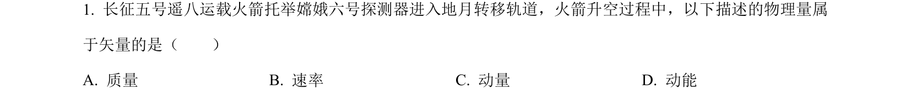
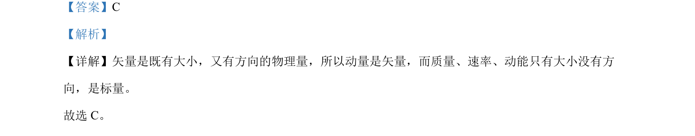

考点：矢量 标量 动量
矢量
标量
动量

该题通过辨析物理量属性，考查矢量和标量的概念区分。

📄 原 PDF 第 1 页：素材/真题/吉林/2008-2024·（吉林）物理高考真题/2024年高考物理试卷（辽宁）（解析卷）.pdf
素材/真题/吉林/2008-2024·（吉林）物理高考真题/2024年高考物理试卷（辽宁）（解析卷）.pdf
【答案】C 【解析】 【详解】矢量是既有大小，又有方向的物理量，所以动量是矢量，而质量、速率、动能只有大小没有方 向，是标量。 故选 C。